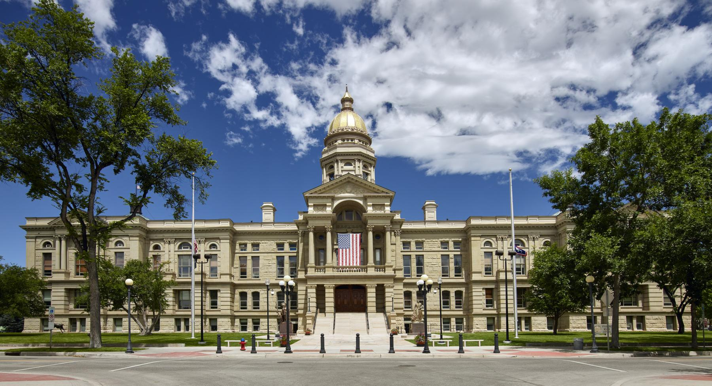

Nov 11, 2026
Wyoming had a blue swing from 2024 to 2026. Voters moved toward Democrats in every county. Republicans still won the big races, and one House seat changed parties.
Research report (PDF) · Word copy (.docx)

CHEYENNE — From the high plains to the mountain counties, Wyoming voters moved toward Democrats in 2026. The change showed up in every county in the state. Republicans still won the big races by a lot, according to official results.1
A state board made the Nov. 3 vote counts final on Tuesday.2 The wind shifted. But only one close race flipped.
A margin is how far one side won. Think of a race with 70 votes for a Republican and 30 votes for a Democrat. The Republican won by 40 points. That 40-point lead is the margin.
A swing is how much that lead changed from one election to the next. Suppose the Republican lead was 40 points last time. Suppose it was 20 points this time.
The change is 20 points toward the Democrats. The Republican still won. The race just got closer.
MTR Research measured the swing from state vote totals.3, 4
In 2024, Donald Trump won Wyoming by about 46 points.4 In 2026, Republican Chuck Gray won the U.S. House race by a little more than 20 points. Republican Harriet Hageman won the U.S. Senate race by a little more than 30 points.1, 3
Both still won. But their leads were smaller than Trump's lead two years before. The average change in those two races was about 21 points toward the Democrats.3 That change is the swing this story uses.
The change was not just in one place. All 23 counties in Wyoming moved toward Democrats in both races.3 The smallest move was about 10 points. The largest was about 25 points.
That means the move was all over the state, county by county. It was not just in one county. It was not just in one part of Wyoming.
The story was different in the Wyoming House. Ten House districts had both a Republican and a Democrat on the ballot in 2024. The same was true in 2026. Those are the races that can be compared in the same way both years.5
In those ten races, the average Republican lead was about 16 points in 2024. In 2026, it was about 8 points.5 The lead was cut about in half. That is a smaller move than the 21-point swing in the U.S. House and Senate races.
Most of those ten districts moved toward Democrats. Three of them moved the other way, toward Republicans.5 The numbers do not show why the House races moved less.
One House seat did change parties. In House District 11, Democrat Britney Tennant beat Republican Dan McIntosh by 53 votes.5 That is a close race. It was still enough to change the winner.
In 2024, a Republican won that same seat. The House now has 55 Republicans and 7 Democrats. It had 56 Republicans and 6 Democrats after 2024.5 Republicans still have far more seats.
An earlier article on this site told the same story about that one House race. It used the first vote count, from election night. It said the Democrat won by 54 votes. The final count is 53 votes.6
The board that made the counts final found no recounts.2
That is the lay of the land after the final count. Wyoming had a blue swing from 2024 to 2026. The move showed up in every county. It was about 21 points in the U.S. House and Senate races.
It was smaller in the House races that can be compared. And it flipped one seat, by 53 votes, a close count on a wide map.
Republicans still won the U.S. House race. They still won the U.S. Senate race. They still hold most of the state House. The swing made the races closer.
It did not change who won, except in that one House seat.
Credits and Sources
- Wyoming Secretary of State — 2026 General Election Official Results, Statewide Candidates Official Summary (certified Nov. 10, 2026). https://sos.wyo.gov/Elections/Docs/2026/Results/General/2026_General_Statewide_Candidates_Summary.pdf
- Wyoming Secretary of State — State Canvassing Board minutes and certification, Nov. 10, 2026; and canvass notice, Nov. 6, 2026. https://sos.wyo.gov/Elections/Docs/2026/Results/General/2026_General_State_Canvassing_Board_Minutes.pdf ; https://sos.wyo.gov/Media/2026/SoS_Release_2026-11-06.pdf
- MTR Research — margin-shift calculations from Secretary of State county and statewide totals, 2024 and 2026 (A005 v0.6 research file; figures unchanged from v0.4 and v0.5).
- Wyoming Secretary of State — 2024 General Election Official Results, Statewide Candidates Official Summary (president). https://sos.wyo.gov/Elections/Docs/2024/Results/General/2024_General_Statewide_Candidates_Summary.pdf
- Wyoming Secretary of State — official House and Senate district summaries, 2026 and 2024 general elections. https://sos.wyo.gov/Elections/Docs/2026/Results/General/2026_General_Statewide_House_Candidates_Summary.pdf ; https://sos.wyo.gov/Elections/Docs/2026/Results/General/2026_General_Statewide_Senate_Candidates_Summary.pdf ; https://sos.wyo.gov/Elections/Docs/2024/Results/General/2024_General_Statewide_House_Candidates_Summary.pdf ; https://sos.wyo.gov/Elections/Docs/2024/Results/General/2024_General_Statewide_Senate_Candidates_Summary.pdf
- An earlier article on this site — "Wyoming's 2026 Legislative Election: One Party Flip, 38 Open Seats," Nov. 9, 2026. https://wyovote.com/articles/a002-2026-legislature-election-results.html